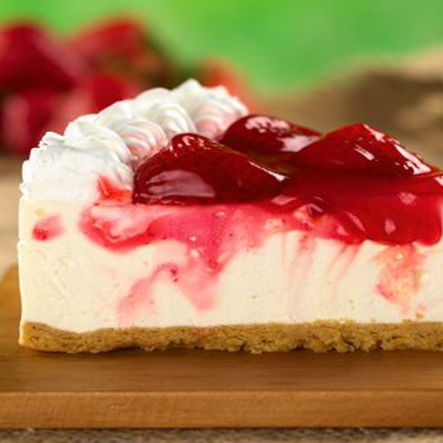
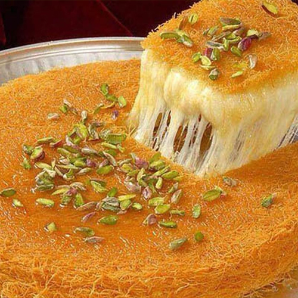
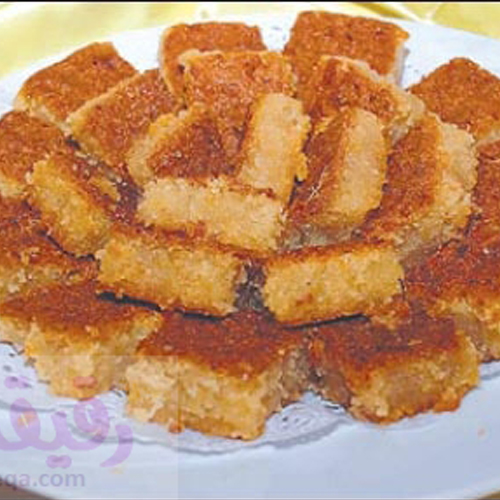
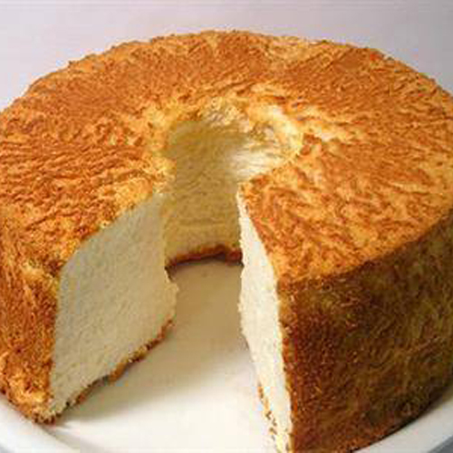

لتحضير العجينة، توضع الخميرة في مقدار من الماء وملعقة من السكر ثم تترك جانباً لمدة خمس دقائق.
في العجانة، توضع الزبدة، السكر والملح وتخفق جيداً، يضاف الحليب، البيض ويخفقوا جيداً ثم يضاف الطحين تدريجياً وعند الوصول الى الكوب الثالث تضاف الخميرة و الماء، تعجن لمدة 10 دقائق ثم تدهن العجينة بالزبدة ،تغطى وتترك لتتخمر لمدة ساعة و نصف.
بعد ان يتضاعف حجم العجين تثقب وتترك لحين الانتهاء من تحضير الحشوة و السكر.
لتحضير الحشوة، في وعاء، تخلط جميع المكونات.
لتحضير كريما السكر، تخلط جميع المكونات جيداً حتى تصبح ناعمة.
تفرد العجينة على سطح مغطى بالطحين ختى يصبح سمكها أقل من نصف سم قليلاً، توزع الحشوة و تدهن على العجين، يلف العجين على شكل رول طويل ثم يقطع بالسكين .
في صينية مدهونة بالزيت، توضع القطع وتترك لمدة نصف ساعة وتدخل إلى الفرن ليصبح لونها ذهبياً من الاسفل ثم تشوى قليلاً من الأعلى، تخرج من الفرن، توضع في طبق التقديم ويوضع كريما السكر فوقها، تقدم باردة.

التشيز كيك
المقادير
١٥ بسكوت دايجستيف
٢ ملعقة زبد ذائب
٤ عبوات جبن مطبوخ غير مملح (يفضل الفيلاديلفيا)
و ١/٢ كوب سكر
٣/٤ كوب حليب
٤ بيض
١ كوب قشطة
١ ملعقة فانيليا
طريقة التحضير
سخني الفرن.
ادهني قاع صنية للفرن بالزيت.
في إناء عميق، اخلطي بسكوت الداجيستيف مع الزبد الذائب ثم قومي بفردها على قاع صنية الفرن.
اطفئي النار ولكن اتركيها تبرد في الفرن لمدة ٢-٣ ساعات حتى لا تتشقق.
ضعيها في الثلاجة لمدة ٢-٣ ساعات قبل التقديم.

الكنافه النابلسي
المقادير
4 كوب كنافة
2 كوب جبنة نابلسية او عكاوي
1 كوب سمنة
2 كوب قطر
1 ملعقة صغيرة صبغة حمراء
1/2 كوب فستق حلبي
طريقة التحضير
نقوم بفرم الكنافة بالخلاط الكهربائي او بتقطيعهم باليد الى ان تصبح ناعمة تقريبا
نقوم بنقع الجبنة وازالة الماء عنها عدة مرات ثم نقوم بتصفية الجبنة وتركها لمدة ساعة الى ان تتصفى من الماء نهائيا
نضع الملون في السمنة المذابة لكي يسهل علينا توزيعها
في صينية قصيرة الحافة نضع كوبين من الكنافة ونصف كمية السمنة ونقوم بتوزيعها على الكنافة
نضع الصينية على النار المتوسطة مع الاستمرار في تدوير الصينية الى ان تصبح شعرات الكنافة ذهبية اللون
في صينية اخرى نضع الكمية الباقية من الكنافة والسمنة المتبقية ونوزعها جيدا ونرصها في الصينية
وايضا نقوم بوضعها على نار متوسطة والاستمرار في تدويرها لتكتسب اللون الذهبي
نفتت الجبنة ونضعها على وجه الكنافة ونقلب الصينية الثانية ونضعها فوق الجبنة ونضغط قليلا
نرش المكسرات على سطح الكنافة وندخل الصينية الى الفرن بحرارة متوسطة الى ان تذوب الجبنة لمدة 10 دقائق تقريبا
نخرج الصينية ونصب القطر الساخن فوقها وتكون جاهزة للتقديم

البسبوسه
المقادير
2 كوب سميد
3/4 كوب سكر
2 ملعقة كبيرة جوز الهند
180 غرام لبن زبادي
1/2 كوب زبدة، اوسمنة مع قشطة او ممكن الاستغناء عن القشطة
1 ملعقة كبيرة بايكينغ باودر، ممسوحة
رشة فانيلا
2 كوب سكر
1/2 كوب ماء
1/2 عصير ليمون حامض
طريقة التحضير
تخلط جميع مقادير البسبوسة مع بعضها جيداً.
يوضع الخليط في صينية كبيرة مدهونة ثم توضع الصينية في الفرن مع المتابعة.
يجهز القطر حسب الطريقة التقليدية.
تخرج الصينية من الفرن ثم تسقى بنصف كمية القطر وهي ساخنة، يرش الوجه بقليل من المكسرات وجوز الهند.
تعاد الصينية مرة ثانية إلى الفرن تحت الشواية لدقيقة ليحمر وجهها، تخرج وتسقى بباقي كمية القطر.

الكيك
المقادير
2 كوب دقيق
4 حبات بيض
3/4 كوب زيت
3/4 كوب حليب
كوب سكر
كيس بكينج بودر
2 كيس فانيليا
ملح
ملعقة صغيرة خل
2 ملعقة نسكويك شوكولاتة حسب الرغبة
طريقة التحضير
نضع الـ 4 حبات بيض بكوب الخلاط ومعهم أقل القليل من الملح ونقوم بضربهم جيدًا ثم نضيف الخل.
ونواصل خفق البيض بالخلاط إلى أن يأخذ لون فاتح وحينها نضع السكر بالتدريج ونستمر فى الخلط، ثم نضيف الزيت أثناء تشغيل الخلاط، ومن بعده الحليب ونواصل الضرب.
ونريح الخلاط بعض الوقت ثم نواصل الضرب من جديد، وفى وعاء عميق نقوم بنخل الدقيق ومعه كيس البكينج بودر .
وأثناء الخلط نضيف الدقيق والبكينج بودر فى الخلاط وبمجرد أن يختفى الدقيق ويذوب داخل الخليط نوقف الخلاط، ونبطن الصينية بفرشاة الزيت ومعها رشة دقيق ونصب الخليط فى بولة حتى نتأكد من اختلاط الدقيق بالسوائل وبعد ذلك نصبه فى الصينية .
يمكن إضافة ملعقتين نسكويك على نصف كوب من الخليط ونمزجهم جيدًا وبعد ذلك نقوم بإضافته بشكل عشوائى على الخليط.
ندخل الصينية فرن ساخن على درجة حرارة 180 درجة لمدة 45 دقيقة، و تقدم الكيك بعد أن تبرد مع الشاى أو العصائر حسب الرغبة .